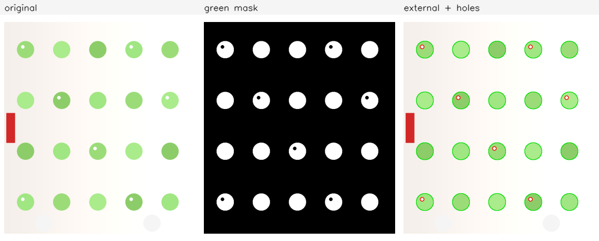
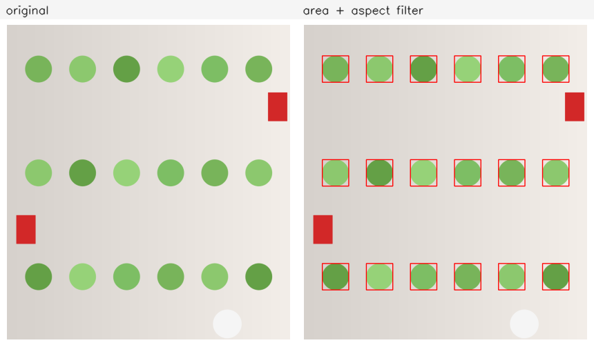
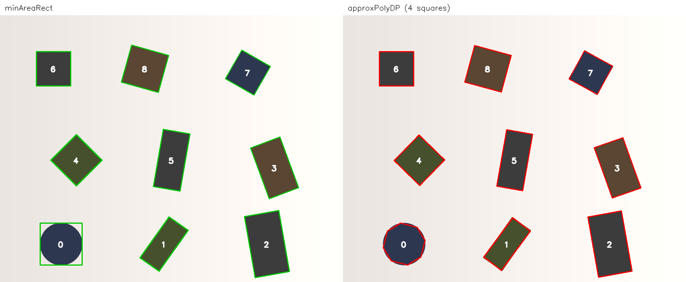
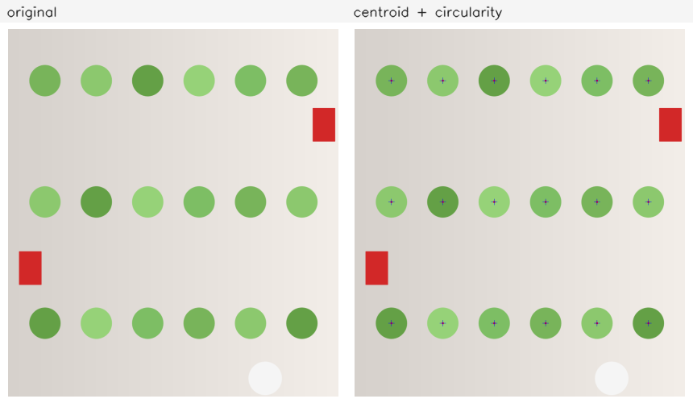
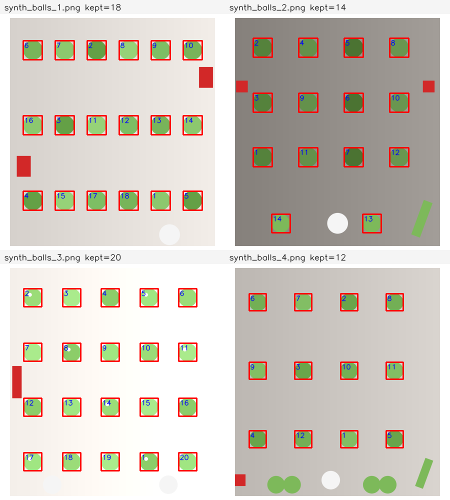
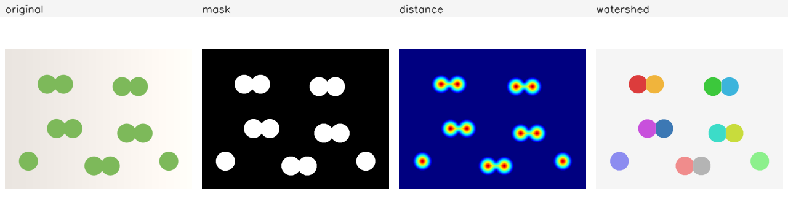

轮廓与形状
这一部分从二值掩码出发：先把目标边界提取成轮廓，再计算面积、周长、 外接矩形、旋转矩形、重心与圆形度，最后组合这些特征筛选候选并去重。 3.1–3.5 需要掌握，3.6 为选学。
需要先读 1.1、
1.2、
1.3，知道 Mat 的通道、
像素访问、ROI 与深浅拷贝；读
1.4 与
1.5，会做 HSV 转换、生成掩码并绘制标注；
还需要读 2.2 与
2.3，会从灰度图或 HSV 图得到二值掩码，
并会用开闭运算清理掩码。本部分默认这些步骤已经会写。
下面的命令在课程文件夹 lessons/opencv（本页所在目录）下执行。
/tmp 是系统存放临时文件的目录，电脑重启后可能被清空。
如果没有按第 0 部分 0.1 准备过练习目录，或者准备之后重启过电脑，
先执行下面几行，再开始这一部分：
rm -rf /tmp/opencv-course
mkdir -p /tmp/opencv-course
cp -r 示例代码 素材 /tmp/opencv-course/
cd /tmp/opencv-course/示例代码
第一行会删除整个练习副本，路径不要改成自己的目录。复制完成后，
用 pwd 确认当前目录是 /tmp/opencv-course/示例代码。
3.1轮廓提取：findContours
轮廓是二值掩码中前景区域边界的点序列。拿到轮廓以后，才能计算面积、 外接矩形、重心，或者把目标画出来交给后续步骤。本课只做一件事： 从干净的掩码得到轮廓，并读懂返回的层级关系。
从掩码到轮廓
cv::findContours(image, contours, hierarchy, mode, method)
的输入必须是 8 位单通道图：类型 CV_8UC1。彩色图
CV_8UC3 直接传入会触发断言，要先转灰度，或在 HSV 空间做
inRange。灰度图可以是阈值或边缘处理的结果，也可以是普通灰度图；
输入不是二值图时，函数仍可能运行，但按“零与非零”划分区域，
结果只反映非零区域，通常没有形状意义。非零像素视为前景，零像素视为背景。
旧版本会改变输入缓冲区的内容；OpenCV 4 的当前实现不修改调用者传入的
Mat，但接口没有承诺这一点。实际写法是传入
mask.clone()，这样后续还要用原掩码时，不依赖实现细节：
std::vector<std::vector<cv::Point>> contours;
std::vector<cv::Vec4i> hierarchy;
cv::findContours(mask.clone(), contours, hierarchy,
cv::RETR_EXTERNAL, cv::CHAIN_APPROX_SIMPLE);
contours 的每个元素是一条轮廓，元素类型是
std::vector<cv::Point>。轮廓点是边界像素的坐标，
单位是像素。轮廓默认按闭合折线处理，最后一个点与第一个点之间的边不重复存储。
CHAIN_APPROX_SIMPLE 会压缩水平、垂直与 45° 方向的连续点，
只保留转折点；CHAIN_APPROX_NONE 保存边界上的每一个点。
做面积、外接矩形与多边形逼近时，前者已经足够，数据量也小得多。
只有在需要逐点检查边界像素时，才用后者。
检索模式与层级
第三个参数决定返回哪些轮廓，以及层级怎样组织：
| 模式 | 返回的轮廓 | 层级 |
|---|---|---|
RETR_EXTERNAL |
只返回最外层轮廓 | 所有轮廓的父与子都是 -1，孔洞不单独返回 |
RETR_LIST |
返回所有轮廓 | 不建立父子关系，层级项基本不用 |
RETR_CCOMP |
返回所有轮廓 | 组织成两层：外边界与孔洞 |
RETR_TREE |
返回所有轮廓 | 完整的树，任意层嵌套都能表示 |
hierarchy 与 contours 一一对应，每一项是四个整数
[next, previous, first_child, parent]。它们都是轮廓数组的下标，
没有对应项时写 -1。例如 hierarchy[i][3] 是第 i 条轮廓的父轮廓，
hierarchy[i][2] 是它的第一条子轮廓，hierarchy[i][0]
是同层的下一条轮廓。孔洞在树中表现为外轮廓的子轮廓。
选哪种模式由任务决定。只数目标个数、不关心目标内部是否有孔时，用
RETR_EXTERNAL；要区分外轮廓与孔洞，或者要按嵌套层级过滤时，
用 RETR_TREE。先选错模式，再在结果里找补，通常会把孔洞
当成额外目标，或者把外轮廓数错。
完整例子：绿色掩码的外轮廓与孔洞
下面的程序读取一张绿球图，用 HSV 范围得到绿色掩码，做 3×3 开运算去掉
零星噪点，然后分别用 RETR_EXTERNAL 与 RETR_TREE
提取轮廓。图像里有 20 个绿球，其中 7 个球带白色高光。高光不是绿色，
在掩码中是孔洞，因此树状轮廓比外轮廓多 7 条。
完整程序：
#include <algorithm>
#include <iostream>
#include <string>
#include <vector>
#include <opencv2/core.hpp>
#include <opencv2/imgproc.hpp>
#include <opencv2/imgcodecs.hpp>
namespace {
void place(cv::Mat& panel, const cv::Mat& image, int x, int y, int width,
int height, const std::string& label) {
const int label_height = 28;
cv::rectangle(panel, cv::Rect(x, y, width, label_height),
cv::Scalar(245, 245, 245), cv::FILLED);
cv::putText(panel, label, cv::Point(x + 8, y + 20),
cv::FONT_HERSHEY_SIMPLEX, 0.55, cv::Scalar(30, 30, 30), 1,
cv::LINE_AA);
const int inner_width = width - 16;
const int inner_height = height - label_height - 16;
const double scale = std::min(static_cast<double>(inner_width) / image.cols,
static_cast<double>(inner_height) / image.rows);
const int shown_width = std::max(1, cvRound(image.cols * scale));
const int shown_height = std::max(1, cvRound(image.rows * scale));
cv::Mat shown;
cv::resize(image, shown, cv::Size(shown_width, shown_height), 0, 0,
cv::INTER_AREA);
const int left = x + (width - shown_width) / 2;
const int top = y + label_height + (inner_height - shown_height) / 2 + 8;
shown.copyTo(panel(cv::Rect(left, top, shown_width, shown_height)));
}
} // namespace
int main() {
cv::Mat image = cv::imread("../素材/synth_balls_3.png", cv::IMREAD_COLOR);
if (image.empty()) {
std::cout << "无法读取素材" << '\n';
return 1;
}
cv::Mat hsv;
cv::cvtColor(image, hsv, cv::COLOR_BGR2HSV);
cv::Mat mask;
cv::inRange(hsv, cv::Scalar(35, 43, 46), cv::Scalar(85, 255, 255), mask);
cv::morphologyEx(mask, mask, cv::MORPH_OPEN,
cv::getStructuringElement(cv::MORPH_RECT,
cv::Size(3, 3)));
std::cout << "mask nonzero=" << cv::countNonZero(mask) << '\n';
std::vector<std::vector<cv::Point>> external;
std::vector<std::vector<cv::Point>> tree;
std::vector<cv::Vec4i> external_hierarchy;
std::vector<cv::Vec4i> hierarchy;
cv::findContours(mask.clone(), external, external_hierarchy,
cv::RETR_EXTERNAL, cv::CHAIN_APPROX_SIMPLE);
cv::findContours(mask.clone(), tree, hierarchy, cv::RETR_TREE,
cv::CHAIN_APPROX_SIMPLE);
std::cout << "external contours=" << external.size() << '\n';
std::cout << "tree contours=" << tree.size() << '\n';
for (std::size_t i = 0; i < tree.size(); ++i) {
if (hierarchy[i][3] >= 0) {
std::cout << "nested i=" << i << " parent=" << hierarchy[i][3]
<< " first=(" << tree[i].front().x << ", "
<< tree[i].front().y << ")\n";
}
}
cv::Mat overlay = image.clone();
cv::drawContours(overlay, external, -1, cv::Scalar(0, 220, 0), 2);
std::vector<std::vector<cv::Point>> holes;
for (std::size_t i = 0; i < tree.size(); ++i) {
if (hierarchy[i][3] >= 0) {
holes.push_back(tree[i]);
}
}
cv::drawContours(overlay, holes, -1, cv::Scalar(0, 0, 255), 2);
cv::Mat mask_color;
cv::cvtColor(mask, mask_color, cv::COLOR_GRAY2BGR);
const int cell_width = 380;
const int cell_height = 460;
cv::Mat panel(cell_height, 3 * cell_width, CV_8UC3,
cv::Scalar(255, 255, 255));
place(panel, image, 0, 0, cell_width, cell_height, "original");
place(panel, mask_color, cell_width, 0, cell_width, cell_height,
"green mask");
place(panel, overlay, 2 * cell_width, 0, cell_width, cell_height,
"external + holes");
const bool saved = cv::imwrite("out_contours.png", panel);
std::cout << "saved out_contours.png: " << (saved ? "yes" : "no")
<< '\n';
return 0;
}在 示例代码 目录下编译并运行：
g++ -std=c++17 -Wall -Wextra 3.1-contours.cpp -o contours \
$(pkg-config --cflags --libs opencv4)
./contoursmask nonzero=102663 external contours=20 tree contours=27 nested i=2 parent=1 first=(594, 829) nested i=6 parent=5 first=(84, 829) nested i=10 parent=9 first=(424, 589) nested i=14 parent=13 first=(764, 349) nested i=18 parent=17 first=(254, 349) nested i=22 parent=21 first=(594, 109) nested i=26 parent=25 first=(84, 109) saved out_contours.png: yes
输出的 mask nonzero=102663 是掩码中非零像素数；
external contours=20 对应 20 个球的外边界；
tree contours=27 多出的 7 条就是白色高光形成的孔洞。
程序打印了每条孔洞的父轮廓下标与第一个点，用来核对层级：
同一个球的外轮廓是父，孔洞是子。红色干扰块不是绿色，没有进入掩码。

绘制与输入错误
cv::drawContours(image, contours, contourIdx, color, thickness)
把轮廓画到三通道图上。contourIdx=-1 表示画全部轮廓；
指定下标时只画那一条。thickness 为正数时画线，为负数时填充
轮廓内部。color 是 BGR 三元组。目标画布必须有三个通道，
把彩色线画到单通道掩码上不会得到彩色结果。
轮廓下标不是稳定标识。不同图像、不同检索模式下，同一条轮廓可能落在 不同下标；排序、去重与参数筛选都不要依赖固定下标。需要稳定顺序时， 按外接矩形的 x、y 或按面积排序，再处理。
常见的输入错误有三类。第一，把彩色图或灰度图直接传给
findContours，函数按非零值划分，结果没有形状意义。
第二，掩码极性反了：目标黑、背景白，得到的是背景的轮廓。
第三，把 RETR_EXTERNAL 的轮廓数当作全部轮廓数，
目标内部的孔洞被漏掉。遇到数量不对，先保存并查看掩码，再检查检索模式。
题目：创建一个 16×16 的掩码，在 (2,2) 画一个 10×10 的白色方块，
在 (5,5) 挖一个 4×4 的黑色孔洞，再在 (13,13) 画一个独立的 2×2 白点。
分别用 RETR_EXTERNAL 与 RETR_TREE 提取轮廓，
打印两种模式的轮廓数，并打印树状模式下每条轮廓的 child 与 parent。
完整程序：
#include <iostream>
#include <vector>
#include <opencv2/core.hpp>
#include <opencv2/imgproc.hpp>
int main() {
cv::Mat mask = cv::Mat::zeros(16, 16, CV_8UC1);
cv::rectangle(mask, cv::Rect(2, 2, 10, 10), cv::Scalar(255), cv::FILLED);
cv::rectangle(mask, cv::Rect(5, 5, 4, 4), cv::Scalar(0), cv::FILLED);
cv::rectangle(mask, cv::Rect(13, 13, 2, 2), cv::Scalar(255), cv::FILLED);
std::vector<std::vector<cv::Point>> external;
std::vector<std::vector<cv::Point>> tree;
std::vector<cv::Vec4i> external_hierarchy;
std::vector<cv::Vec4i> hierarchy;
cv::findContours(mask.clone(), external, external_hierarchy,
cv::RETR_EXTERNAL, cv::CHAIN_APPROX_SIMPLE);
cv::findContours(mask.clone(), tree, hierarchy, cv::RETR_TREE,
cv::CHAIN_APPROX_SIMPLE);
std::cout << "external=" << external.size() << '\n';
std::cout << "tree=" << tree.size() << '\n';
for (std::size_t i = 0; i < tree.size(); ++i) {
std::cout << "i=" << i << " child=" << hierarchy[i][2]
<< " parent=" << hierarchy[i][3] << '\n';
}
return 0;
}编译并运行：
g++ -std=c++17 -Wall -Wextra 3.1-eg-hierarchy.cpp -o eg_hierarchy \
$(pkg-config --cflags --libs opencv4)
./eg_hierarchyexternal=2 tree=3 i=0 child=-1 parent=-1 i=1 child=2 parent=-1 i=2 child=-1 parent=1
外轮廓只有两个：带孔的大方块与独立小点。树状模式多出孔洞这一条， 所以是三条。打印结果中下标 0 是小点，下标 1 是大方块，下标 2 是孔洞； 下标 2 的 parent 是 1，说明孔洞挂在大方块下面。独立小点没有父轮廓， parent 为 -1。轮廓下标本身没有语义，这里只是为了看清层级关系。
创建一个 18×18 的掩码：在 (2,2) 画 8×8 白方块，在 (4,4) 挖 4×4
黑洞；再在 (13,2)、(2,13)、(12,12) 各画一个 4×4 白方块。
用 RETR_EXTERNAL 与 RETR_TREE 提取轮廓，
打印外轮廓数、树状轮廓数，以及 parent 不为 -1 的轮廓数。
预期输出：
external=4 tree=5 nested=1
看答案
四个独立的白区域给出四条外轮廓；大方形内部的黑洞只出现在树状模式中， 所以树状轮廓是五条、嵌套轮廓是一条。三个小方块与大方块之间至少隔一个 像素，8 邻域下不会连成一片。
#include <iostream>
#include <vector>
#include <opencv2/core.hpp>
#include <opencv2/imgproc.hpp>
int main() {
cv::Mat mask = cv::Mat::zeros(18, 18, CV_8UC1);
cv::rectangle(mask, cv::Rect(2, 2, 8, 8), cv::Scalar(255), cv::FILLED);
cv::rectangle(mask, cv::Rect(4, 4, 4, 4), cv::Scalar(0), cv::FILLED);
cv::rectangle(mask, cv::Rect(13, 2, 4, 4), cv::Scalar(255), cv::FILLED);
cv::rectangle(mask, cv::Rect(2, 13, 4, 4), cv::Scalar(255), cv::FILLED);
cv::rectangle(mask, cv::Rect(12, 12, 4, 4), cv::Scalar(255), cv::FILLED);
std::vector<std::vector<cv::Point>> external;
std::vector<std::vector<cv::Point>> tree;
std::vector<cv::Vec4i> hierarchy;
cv::findContours(mask.clone(), external, cv::RETR_EXTERNAL,
cv::CHAIN_APPROX_SIMPLE);
cv::findContours(mask.clone(), tree, hierarchy, cv::RETR_TREE,
cv::CHAIN_APPROX_SIMPLE);
int nested = 0;
for (const cv::Vec4i& item : hierarchy) {
if (item[3] >= 0) {
++nested;
}
}
std::cout << "external=" << external.size() << '\n';
std::cout << "tree=" << tree.size() << '\n';
std::cout << "nested=" << nested << '\n';
return 0;
}external=4 tree=5 nested=1
你现在能写什么：把彩色图或灰度图先变成 8 位单通道掩码，再传入
findContours；在 RETR_EXTERNAL 与
RETR_TREE 之间按任务选择；读懂 hierarchy 的 next、previous、
first_child、parent；用 drawContours 把外轮廓与孔洞分别画出。
3.2面积、周长与外接矩形
轮廓提取之后，最先要回答的是“这块区域多大、在哪里”。本课讲三个基础量： 轮廓面积、轮廓周长、轴对齐外接矩形。它们计算简单，但对像素边界、 分辨率和目标旋转都很敏感，参数不能脱离图像尺寸直接照搬。
面积、周长与有向性
cv::contourArea(contour) 按轮廓点围成的多边形计算面积，
默认返回绝对值（oriented=false）。需要判断轮廓方向时，
调用 contourArea(contour, true)；此时返回有向面积，
符号由点的排列方向决定，顺时针与逆时针得到相反的正负号。
面积单位是像素²。
面积按多边形顶点计算，不按掩码里的白色像素个数计算。一个 4×4 的实心方块，
白色像素有 16 个，但轮廓点位于像素中心，四个角点围成的多边形只跨 3×3 个
像素间距，面积是 9。这个差别在目标很小时最明显；目标变大后，相对误差会下降，
但不会消失。需要精确的像素计数时，用 countNonZero 统计掩码，
不要拿轮廓面积代替。
cv::arcLength(contour, closed) 计算折线长度。
closed=true 时把最后一个点回到第一个点的边也算进去；
闭合轮廓要传 true。长度单位是像素。轮廓点越密，
折线越接近真实边界；CHAIN_APPROX_SIMPLE 只保留转折点，
对规则形状的周长影响不大，但在斜边上会少算一些细节。
面积与周长常一起用：圆形度 4πA/P² 就是两者的组合。
单独看面积只能筛大小，单独看周长只能筛边界长度；两者一起，
才能把细长目标与近似圆形目标区分开。
外接矩形与填充率
cv::boundingRect(contour) 返回
cv::Rect(x, y, width, height)，是包含整条轮廓的轴对齐矩形。
它的边平行于图像的 x、y 轴，不随目标旋转。目标倾斜时，矩形会明显大于目标本身。
矩形的面积是 width*height，不要把它当作轮廓面积。
轮廓面积与矩形面积之比称为填充率：
extent = area / (width*height)。轴对齐的实心矩形接近 1；
圆形接近 π/4≈0.785；细长目标、倾斜目标与凹形目标的填充率更低。
填充率可以用来排除“矩形框很大、实际目标很细”的候选，
但它同样受像素离散化影响，阈值要按实际图像标定。
矩形的位置与宽高适合直接用于裁剪、画框与排序。需要按目标真实朝向画框时，
用下一课的 minAreaRect；本节只处理轴对齐框。
完整例子：面积与外接矩形筛选
程序读取第一张绿球图，得到绿色掩码，提取外轮廓。每个球半径约 42 像素， 轮廓面积约 5600 像素²。程序保留面积在 1500 到 8000 之间、宽高比在 0.75 到 1.35 之间的轮廓，并打印面积、周长、外接矩形与填充率。 图中的红色干扰块在掩码阶段已经被排除，白色球也不是绿色，因此不会进入轮廓表。
完整程序：
#include <algorithm>
#include <iomanip>
#include <iostream>
#include <string>
#include <vector>
#include <opencv2/core.hpp>
#include <opencv2/imgproc.hpp>
#include <opencv2/imgcodecs.hpp>
namespace {
void place(cv::Mat& panel, const cv::Mat& image, int x, int y, int width,
int height, const std::string& label) {
const int label_height = 28;
cv::rectangle(panel, cv::Rect(x, y, width, label_height),
cv::Scalar(245, 245, 245), cv::FILLED);
cv::putText(panel, label, cv::Point(x + 8, y + 20),
cv::FONT_HERSHEY_SIMPLEX, 0.55, cv::Scalar(30, 30, 30), 1,
cv::LINE_AA);
const int inner_width = width - 16;
const int inner_height = height - label_height - 16;
const double scale = std::min(static_cast<double>(inner_width) / image.cols,
static_cast<double>(inner_height) / image.rows);
const int shown_width = std::max(1, cvRound(image.cols * scale));
const int shown_height = std::max(1, cvRound(image.rows * scale));
cv::Mat shown;
cv::resize(image, shown, cv::Size(shown_width, shown_height), 0, 0,
cv::INTER_AREA);
const int left = x + (width - shown_width) / 2;
const int top = y + label_height + (inner_height - shown_height) / 2 + 8;
shown.copyTo(panel(cv::Rect(left, top, shown_width, shown_height)));
}
} // namespace
int main() {
cv::Mat image = cv::imread("../素材/synth_balls_1.png", cv::IMREAD_COLOR);
if (image.empty()) {
std::cout << "无法读取素材" << '\n';
return 1;
}
cv::Mat hsv;
cv::cvtColor(image, hsv, cv::COLOR_BGR2HSV);
cv::Mat mask;
cv::inRange(hsv, cv::Scalar(35, 43, 46), cv::Scalar(85, 255, 255), mask);
cv::morphologyEx(mask, mask, cv::MORPH_OPEN,
cv::getStructuringElement(cv::MORPH_RECT,
cv::Size(3, 3)));
std::vector<std::vector<cv::Point>> contours;
cv::findContours(mask.clone(), contours, cv::RETR_EXTERNAL,
cv::CHAIN_APPROX_SIMPLE);
int kept = 0;
cv::Mat marked = image.clone();
std::cout << std::fixed << std::setprecision(3);
for (std::size_t i = 0; i < contours.size(); ++i) {
const double area = cv::contourArea(contours[i]);
const double perimeter = cv::arcLength(contours[i], true);
const cv::Rect box = cv::boundingRect(contours[i]);
const double aspect =
static_cast<double>(box.width) / std::max(1, box.height);
if (area < 1500.0 || area > 8000.0 || aspect < 0.75 || aspect > 1.35) {
continue;
}
const double extent =
area / static_cast<double>(std::max(1, box.width * box.height));
std::cout << "i=" << i << " area=" << area
<< " perim=" << perimeter << " box=(" << box.x << ", "
<< box.y << ", " << box.width << ", " << box.height
<< ") extent=" << extent << '\n';
cv::rectangle(marked, box, cv::Scalar(0, 0, 255), 2);
++kept;
}
std::cout << "kept=" << kept << " of " << contours.size() << '\n';
const int cell_width = 430;
const int cell_height = 500;
cv::Mat panel(cell_height, 2 * cell_width, CV_8UC3,
cv::Scalar(255, 255, 255));
place(panel, image, 0, 0, cell_width, cell_height, "original");
place(panel, marked, cell_width, 0, cell_width, cell_height,
"area + aspect filter");
const bool saved = cv::imwrite("out_measure.png", panel);
std::cout << "saved out_measure.png: " << (saved ? "yes" : "no")
<< '\n';
return 0;
}编译并运行：
g++ -std=c++17 -Wall -Wextra 3.2-measure.cpp -o measure \
$(pkg-config --cflags --libs opencv4)
./measurei=0 area=5628.000 perim=279.764 box=(758, 758, 85, 85) extent=0.779 i=1 area=5624.000 perim=279.764 box=(618, 758, 85, 85) extent=0.778 i=2 area=5632.000 perim=279.764 box=(478, 758, 85, 85) extent=0.780 i=3 area=5632.000 perim=279.764 box=(338, 758, 85, 85) extent=0.780 i=4 area=5628.000 perim=279.764 box=(198, 758, 85, 85) extent=0.779 i=5 area=5632.000 perim=279.764 box=(58, 758, 85, 85) extent=0.780 i=6 area=5624.000 perim=279.764 box=(758, 428, 85, 85) extent=0.778 i=7 area=5628.000 perim=279.764 box=(618, 428, 85, 85) extent=0.779 i=8 area=5628.000 perim=279.764 box=(478, 428, 85, 85) extent=0.779 i=9 area=5628.000 perim=279.764 box=(338, 428, 85, 85) extent=0.779 i=10 area=5632.000 perim=279.764 box=(198, 428, 85, 85) extent=0.780 i=11 area=5632.000 perim=279.764 box=(58, 428, 85, 85) extent=0.780 i=12 area=5624.000 perim=279.764 box=(758, 98, 85, 85) extent=0.778 i=13 area=5630.000 perim=279.764 box=(618, 98, 85, 85) extent=0.779 i=14 area=5624.000 perim=279.764 box=(478, 98, 85, 85) extent=0.778 i=15 area=5632.000 perim=279.764 box=(338, 98, 85, 85) extent=0.780 i=16 area=5630.000 perim=279.764 box=(198, 98, 85, 85) extent=0.779 i=17 area=5632.000 perim=279.764 box=(58, 98, 85, 85) extent=0.780 kept=18 of 18 saved out_measure.png: yes
18 条轮廓全部通过筛选。面积在 5624 到 5632 之间，外接矩形都是 85×85， 填充率约 0.78，接近圆的 π/4。周长 279.764 是按折线累加得到的， 比连续圆的 2πr 略大，这是栅格边界带来的误差。外接矩形尺寸相同， 说明这些球的半径一致，筛选条件没有误删。

尺寸、分辨率与阈值换算
面积随图像尺寸的平方变化，周长随尺寸线性变化。同一目标在 1280×720 与 640×360 两张图中，面积会相差约 4 倍，周长相差约 2 倍。把某一分辨率下调好的 面积阈值直接搬到另一分辨率，筛选结果一定改变。
可靠的写法是先确定目标的物理尺寸或像素直径，再按比例换算阈值。
例如已知球在图中直径约 84 像素，面积下限取
0.3 × π × 42²，上限取 1.5 × π × 42²，
比直接写 1500 与 8000 更容易解释。若相机距离会变化，应把面积阈值与
外接矩形尺寸绑定，或者先做尺度归一化。
宽高比也受旋转影响：轴对齐外接矩形对 45° 的目标会给出接近 1 的宽高比， 对细长目标则接近短边/长边。用宽高比筛选时，要确认目标在图像中的朝向范围； 朝向不固定时，改用旋转矩形或面积与周长的组合。
题目：创建一个 12×12 的掩码，在 (2,2) 画一个 4×4 的实心白方块。 提取外轮廓，打印掩码非零像素数、轮廓面积、闭合周长、外接矩形与填充率。
完整程序：
#include <iomanip>
#include <iostream>
#include <vector>
#include <opencv2/core.hpp>
#include <opencv2/imgproc.hpp>
int main() {
cv::Mat mask = cv::Mat::zeros(12, 12, CV_8UC1);
cv::rectangle(mask, cv::Rect(2, 2, 4, 4), cv::Scalar(255), cv::FILLED);
std::vector<std::vector<cv::Point>> contours;
cv::findContours(mask.clone(), contours, cv::RETR_EXTERNAL,
cv::CHAIN_APPROX_SIMPLE);
const double area = cv::contourArea(contours.front());
const double perimeter = cv::arcLength(contours.front(), true);
const cv::Rect box = cv::boundingRect(contours.front());
const double extent = area / static_cast<double>(box.width * box.height);
std::cout << "pixels=" << cv::countNonZero(mask) << '\n';
std::cout << std::fixed << std::setprecision(3);
std::cout << "area=" << area << " perimeter=" << perimeter << '\n';
std::cout << "box=(" << box.x << ", " << box.y << ", " << box.width
<< ", " << box.height << ") extent=" << extent << '\n';
return 0;
}编译并运行：
g++ -std=c++17 -Wall -Wextra 3.2-eg-area.cpp -o eg_area \
$(pkg-config --cflags --libs opencv4)
./eg_areapixels=16 area=9.000 perimeter=12.000 box=(2, 2, 4, 4) extent=0.562
非零像素是 16，轮廓面积却是 9。原因不是算错：轮廓的四个角点位于像素中心，
横向与纵向各跨 3 个像素间距，围成的多边形是 3×3。闭合周长同样是
2×(3+3)=12，不是按 16 个像素的外轮廓逐边计数得到的值。
填充率 0.562 也因此低于 1。目标越小，这种离散化差异占比越大；
做小目标筛选时，直接用掩码像素数往往更可靠。
创建一个 12×12 的掩码，在 (2,2) 画一个 6×2 的实心白方块。 提取外轮廓，按顺序打印非零像素数、轮廓面积、闭合周长、 外接矩形的 x、y、宽、高，以及填充率。
预期输出：
pixels=12 area=5.000 perimeter=12.000 box=(2, 2, 6, 2) extent=0.417
看答案
6×2 个像素共有 12 个非零值；轮廓点横向跨 5 个间距、纵向跨 1 个间距，
多边形面积是 5，闭合周长是 2×(5+1)=12。
外接矩形仍是 6×2，填充率为 5/12≈0.417。这个例子说明，
小目标的轮廓面积可以明显小于像素个数，阈值不能按像素个数直接写。
#include <iomanip>
#include <iostream>
#include <vector>
#include <opencv2/core.hpp>
#include <opencv2/imgproc.hpp>
int main() {
cv::Mat mask = cv::Mat::zeros(12, 12, CV_8UC1);
cv::rectangle(mask, cv::Rect(2, 2, 6, 2), cv::Scalar(255), cv::FILLED);
std::vector<std::vector<cv::Point>> contours;
cv::findContours(mask.clone(), contours, cv::RETR_EXTERNAL,
cv::CHAIN_APPROX_SIMPLE);
const double area = cv::contourArea(contours.front());
const double perimeter = cv::arcLength(contours.front(), true);
const cv::Rect box = cv::boundingRect(contours.front());
std::cout << "pixels=" << cv::countNonZero(mask) << '\n';
std::cout << std::fixed << std::setprecision(3);
std::cout << "area=" << area << " perimeter=" << perimeter << '\n';
std::cout << "box=(" << box.x << ", " << box.y << ", " << box.width
<< ", " << box.height << ")\n";
std::cout << "extent="
<< area / static_cast<double>(box.width * box.height) << '\n';
return 0;
}pixels=12 area=5.000 perimeter=12.000 box=(2, 2, 6, 2) extent=0.417
你现在能写什么：用 contourArea 与
arcLength 计算轮廓面积和闭合周长；用 boundingRect
得到轴对齐框并按面积、宽高比筛选；计算填充率并解释它为什么不是 1；
把像素阈值按分辨率换算，而不是在不同图像之间直接照搬。
3.3旋转矩形、外接圆与多边形逼近
轴对齐矩形无法表示目标的朝向。本课用三个工具描述形状：最小面积旋转矩形
minAreaRect、最小外接圆 minEnclosingCircle、
多边形逼近 approxPolyDP。它们分别回答“目标朝哪、外接圆多大、
能不能用几条边代表”。
minAreaRect 与 boxPoints
cv::minAreaRect(contour) 返回 cv::RotatedRect，
包含中心 center、尺寸 size 与角度 angle。
它寻找面积最小的旋转矩形，不要求边平行于图像轴。尺寸的两个分量分别对应
矩形的两条边，但不保证第一个分量是长边；需要长短边时自己比较大小。
角度范围随 OpenCV 版本变化：OpenCV 4.9 的常见输出是 [0°, 90°]， 轴对齐的矩形会出现 90°；旧版本可能是 [-90°, 0°]。 不要假设角度一定落在某个开区间，也不要用角度直接判断“顺时针 30°”； 先确认当前版本的行为，再把角度归一化到自己的表示。跨版本复用代码时， 这一点尤其容易出错。
cv::boxPoints(rect, points) 把旋转矩形的四个角写入
std::vector<cv::Point2f> 或定长数组。点的顺序不保证
从左上角开始，也不保证顺时针。需要按固定顺序使用时，先按 y 再按 x 排序，
或者用中心点计算每个角的角度后排序。透视变换、四边形配对都依赖点序，
不能拿到四个点就直接代入。
外接圆与 approxPolyDP
cv::minEnclosingCircle(contour, center, radius) 返回能包住
整条轮廓的最小圆。圆心是 cv::Point2f，半径是
float。它适合圆形目标的粗略定位与尺寸估计，不适合判断形状：
正方形、三角形也都有外接圆。
cv::approxPolyDP(contour, approx, epsilon, closed) 用
Douglas–Peucker 算法把轮廓简化成折线。epsilon 是允许的
最大偏差，单位是像素；closed=true 表示轮廓闭合。
epsilon 越大，保留的顶点越少；epsilon 过大时，相邻的边会被合并，
正方形可能退化成三角形，圆形可能退化成很少的边。
epsilon 常按周长取比例，例如 0.02 * arcLength(contour, true)。
比例没有通用最优值：目标边界越不规则，epsilon 应越小；只想判断
“是不是四边形”时，可以适当放大，但要用一组真实样本检查顶点数分布。
逼近后的顶点顺序沿原轮廓方向，闭合标志要与后续的边、角计算保持一致。
完整例子：色块的旋转矩形与顶点
程序读取一张包含正方形、长方形与圆的合成图，用灰度阈值得到前景掩码， 提取 9 条外轮廓。对每条轮廓计算最小面积旋转矩形、按周长 3% 做多边形逼近， 统计逼近后的顶点数与直角数，并用顶点数为 4、长短边比不超过 1.12、 直角数为 4 判断正方形。
完整程序：
#include <algorithm>
#include <cmath>
#include <iomanip>
#include <iostream>
#include <vector>
#include <opencv2/core.hpp>
#include <opencv2/imgproc.hpp>
#include <opencv2/imgcodecs.hpp>
namespace {
double side_ratio(const cv::RotatedRect& rect) {
const double long_side = std::max(rect.size.width, rect.size.height);
const double short_side = std::max(1.0, std::min(
static_cast<double>(rect.size.width),
static_cast<double>(rect.size.height)));
return long_side / short_side;
}
int count_right_angles(const std::vector<cv::Point>& polygon) {
int count = 0;
const std::size_t n = polygon.size();
for (std::size_t i = 0; i < n; ++i) {
const cv::Point2d before(polygon[(i + n - 1) % n] - polygon[i]);
const cv::Point2d after(polygon[(i + 1) % n] - polygon[i]);
const double length = std::max(1e-6,
std::sqrt(before.dot(before)) *
std::sqrt(after.dot(after)));
if (std::abs(before.dot(after)) / length < 0.15) {
++count;
}
}
return count;
}
} // namespace
int main() {
cv::Mat image = cv::imread("../素材/synth_blocks.png", cv::IMREAD_COLOR);
if (image.empty()) {
std::cout << "无法读取素材" << '\n';
return 1;
}
cv::Mat gray;
cv::Mat mask;
cv::cvtColor(image, gray, cv::COLOR_BGR2GRAY);
cv::threshold(gray, mask, 160, 255, cv::THRESH_BINARY_INV);
cv::morphologyEx(mask, mask, cv::MORPH_OPEN,
cv::getStructuringElement(cv::MORPH_RECT,
cv::Size(3, 3)));
std::vector<std::vector<cv::Point>> contours;
cv::findContours(mask.clone(), contours, cv::RETR_EXTERNAL,
cv::CHAIN_APPROX_SIMPLE);
cv::Mat marked_rect = image.clone();
cv::Mat marked_poly = image.clone();
int squares = 0;
std::cout << std::fixed << std::setprecision(2);
for (std::size_t i = 0; i < contours.size(); ++i) {
const cv::RotatedRect rect = cv::minAreaRect(contours[i]);
const double perimeter = cv::arcLength(contours[i], true);
std::vector<cv::Point> polygon;
cv::approxPolyDP(contours[i], polygon, 0.03 * perimeter, true);
const int right_angles = count_right_angles(polygon);
const bool square = polygon.size() == 4 && side_ratio(rect) <= 1.12
&& right_angles == 4;
if (square) {
++squares;
}
std::cout << "i=" << i << " center=(" << rect.center.x << ", "
<< rect.center.y << ") size=" << rect.size.width << "x"
<< rect.size.height << " angle=" << rect.angle
<< " approx=" << polygon.size()
<< " right=" << right_angles
<< " square=" << (square ? "yes" : "no") << '\n';
cv::Point2f corners[4];
rect.points(corners);
for (int k = 0; k < 4; ++k) {
cv::line(marked_rect, corners[k], corners[(k + 1) % 4],
cv::Scalar(0, 200, 0), 2);
}
std::vector<std::vector<cv::Point>> one{polygon};
cv::drawContours(marked_poly, one, -1, cv::Scalar(0, 0, 255), 2);
for (cv::Mat* canvas : {&marked_rect, &marked_poly}) {
cv::putText(*canvas, std::to_string(i),
cv::Point(cvRound(rect.center.x) - 8,
cvRound(rect.center.y) + 8),
cv::FONT_HERSHEY_SIMPLEX, 0.65,
cv::Scalar(255, 255, 255), 2, cv::LINE_AA);
}
}
std::cout << "squares=" << squares << " of " << contours.size() << '\n';
cv::Mat panel(image.rows + 40, 2 * image.cols, CV_8UC3,
cv::Scalar(255, 255, 255));
marked_rect.copyTo(panel(cv::Rect(0, 40, image.cols, image.rows)));
marked_poly.copyTo(
panel(cv::Rect(image.cols, 40, image.cols, image.rows)));
cv::putText(panel, "minAreaRect", cv::Point(12, 27),
cv::FONT_HERSHEY_SIMPLEX, 0.65, cv::Scalar(30, 30, 30), 1,
cv::LINE_AA);
cv::putText(panel, "approxPolyDP (4 squares)",
cv::Point(image.cols + 12, 27), cv::FONT_HERSHEY_SIMPLEX,
0.65, cv::Scalar(30, 30, 30), 1, cv::LINE_AA);
const bool saved = cv::imwrite("out_shapes.png", panel);
std::cout << "saved out_shapes.png: " << (saved ? "yes" : "no")
<< '\n';
return 0;
}编译并运行：
g++ -std=c++17 -Wall -Wextra 3.3-shapes.cpp -o shapes \
$(pkg-config --cflags --libs opencv4)
./shapesi=0 center=(160.00, 600.00) size=110.00x110.00 angle=90.00 approx=8 right=0 square=no i=1 center=(430.00, 600.00) size=60.89x131.42 angle=35.27 approx=4 right=4 square=no i=2 center=(700.00, 600.00) size=162.02x90.84 angle=79.94 approx=4 right=4 square=no i=3 center=(720.00, 400.00) size=141.46x82.00 angle=69.90 approx=4 right=4 square=no i=4 center=(200.00, 380.00) size=94.75x94.75 angle=45.00 approx=4 right=4 square=yes i=5 center=(450.00, 380.00) size=70.51x151.70 angle=9.96 approx=4 right=4 square=no i=6 center=(140.00, 140.00) size=90.00x90.00 angle=90.00 approx=4 right=4 square=yes i=7 center=(650.00, 150.00) size=86.40x86.40 angle=29.58 approx=4 right=4 square=yes i=8 center=(380.00, 140.00) size=100.83x100.83 angle=15.15 approx=4 right=4 square=yes squares=4 of 9 saved out_shapes.png: yes
9 条轮廓里有 4 个正方形：下标 4、6、7、8。下标 0 是圆，最小外接旋转矩形 是 110×110，长短边比等于 1，但逼近后有 8 个顶点，不满足“四边形”条件， 因此没有被判成正方形。这说明只看向外接矩形的边长比不够，还要同时检查 顶点数与直角数。其余长方形都是 4 个顶点、4 个直角，但长短边比超过 1.12。
角度列中，轴对齐的方形显示 90.00°，倾斜方形显示 45.00°、29.58°、
15.15°。这些数值与 OpenCV 当前版本的 RotatedRect 约定有关，
不适合直接当作目标的物理角度；若要比较朝向，先把尺寸分量与角度一起归一化，
或者用四个角点计算边长与方向向量。

直角、边长比与判据
两条边是否垂直，用相邻边向量的点积判断。设顶点为 A、B、C，向量
u=A-B、v=C-B，夹角余弦为
u·v/(|u||v|)；绝对值小于 0.15 时，夹角约在 81° 到 99° 之间，
可以视为直角。阈值放宽会接受更多倾斜形状，收紧会漏掉被栅格化削角的方形。
边长比用旋转矩形的长边除以短边。正方形判据通常写成 “顶点数为 4、边长比接近 1、直角数为 4”。三个条件缺一不可： 圆的外接矩形边长比为 1，但没有 4 个顶点；长方形的顶点数与直角数都满足， 边长比不满足；被遮挡的方形可能只剩 4 个顶点但边长比偏离。
遮挡、透视与噪声都会改变顶点数与边长比。透视下，正方形的边不再等长， 直角也会变成锐角或钝角；此时应先用单应性矫正，再做形状判断。 参数要在包含遮挡与倾斜的样本上检查，不能只看一张正对相机的图。
题目：创建一个 20×20 的掩码，以 (10,10) 为中心、8×4 大小、旋转 30° 画一个实心矩形。提取外轮廓，计算最小面积旋转矩形，按长短边排序后 打印中心与尺寸；再用周长 2% 的 epsilon 做多边形逼近，打印顶点数。
完整程序：
#include <algorithm>
#include <cmath>
#include <iomanip>
#include <iostream>
#include <vector>
#include <opencv2/core.hpp>
#include <opencv2/imgproc.hpp>
int main() {
cv::Mat mask = cv::Mat::zeros(20, 20, CV_8UC1);
const cv::RotatedRect source(cv::Point2f(10.0F, 10.0F),
cv::Size2f(8.0F, 4.0F), 30.0F);
cv::Point2f points[4];
source.points(points);
std::vector<cv::Point> polygon;
for (const cv::Point2f& point : points) {
polygon.emplace_back(cvRound(point.x), cvRound(point.y));
}
cv::fillConvexPoly(mask, polygon, cv::Scalar(255), cv::LINE_8);
std::vector<std::vector<cv::Point>> contours;
cv::findContours(mask.clone(), contours, cv::RETR_EXTERNAL,
cv::CHAIN_APPROX_SIMPLE);
const cv::RotatedRect rect = cv::minAreaRect(contours.front());
const double long_side = std::max(rect.size.width, rect.size.height);
const double short_side = std::min(rect.size.width, rect.size.height);
const double perimeter = cv::arcLength(contours.front(), true);
std::vector<cv::Point> approx;
cv::approxPolyDP(contours.front(), approx, 0.02 * perimeter, true);
std::cout << std::fixed << std::setprecision(2);
std::cout << "center=(" << rect.center.x << ", " << rect.center.y
<< ") size=" << long_side << "x" << short_side << '\n';
std::cout << "approx=" << approx.size() << '\n';
return 0;
}编译并运行：
g++ -std=c++17 -Wall -Wextra 3.3-eg-minrect.cpp -o eg_minrect \
$(pkg-config --cflags --libs opencv4)
./eg_minrectcenter=(10.00, 10.00) size=8.32x4.99 approx=4
旋转矩形回到 8.32×4.99，中心仍是 (10.00, 10.00)，逼近后保留 4 个顶点。
尺寸比原始的 8×4 略大，是因为绘制时四个角点被四舍五入到整数像素，
边界再按像素栅格化；最小外接矩形只能包住这些像素，不能恢复到连续坐标。
角度没有打印，因为不同版本的 RotatedRect 对角度的定义不同，
这里只需要尺寸与中心。
创建一个 18×18 的掩码，在 (3,3) 画一个 10×4 的实心白矩形。 提取外轮廓，计算最小面积旋转矩形，按长短边排序后打印中心与尺寸； 再用周长 2% 的 epsilon 做多边形逼近，打印顶点数。运行前先估计： 轮廓点位于像素中心，尺寸会比 10×4 小多少？
预期输出：
center=(7.50, 4.50) size=9.00x3.00 approx=4
看答案
10×4 个像素的轮廓点横向跨 9 个间距、纵向跨 3 个间距， 所以最小外接矩形是 9×3，中心在 (7.5, 4.5)。逼近后是 4 个顶点。 如果按 10×4 写死阈值，边界像素的离散化会带来约一个像素的系统偏差。
#include <algorithm>
#include <iomanip>
#include <iostream>
#include <vector>
#include <opencv2/core.hpp>
#include <opencv2/imgproc.hpp>
int main() {
cv::Mat mask = cv::Mat::zeros(18, 18, CV_8UC1);
cv::rectangle(mask, cv::Rect(3, 3, 10, 4), cv::Scalar(255), cv::FILLED);
std::vector<std::vector<cv::Point>> contours;
cv::findContours(mask.clone(), contours, cv::RETR_EXTERNAL,
cv::CHAIN_APPROX_SIMPLE);
const cv::RotatedRect rect = cv::minAreaRect(contours.front());
const double long_side = std::max(rect.size.width, rect.size.height);
const double short_side = std::min(rect.size.width, rect.size.height);
const double perimeter = cv::arcLength(contours.front(), true);
std::vector<cv::Point> approx;
cv::approxPolyDP(contours.front(), approx, 0.02 * perimeter, true);
std::cout << std::fixed << std::setprecision(2);
std::cout << "center=(" << rect.center.x << ", " << rect.center.y
<< ") size=" << long_side << "x" << short_side << '\n';
std::cout << "approx=" << approx.size() << '\n';
return 0;
}center=(7.50, 4.50) size=9.00x3.00 approx=4
你现在能写什么：用 minAreaRect 得到旋转矩形的中心、
尺寸与角度，用 boxPoints 取四个角；用
minEnclosingCircle 估计圆形目标的位置与半径；用
approxPolyDP 控制顶点数；用边长比、顶点数与点积判断正方形与直角，
并说明角度约定与遮挡对判据的影响。
3.4矩、重心与形状特征
面积与矩形描述目标的尺度，矩与重心描述目标的位置和质量分布。 本课从轮廓矩计算重心，再用面积与周长组合出圆形度，最后用这些特征 把圆形目标与非圆形目标分开。
矩与重心
cv::moments(contour) 返回轮廓的矩。m00 是零阶矩，
对二值轮廓来说等于轮廓面积；m10 与 m01 是一阶矩。
重心坐标由
cx = m10/m00、cy = m01/m00 得到。
重心是轮廓点的面积加权中心，不是外接矩形的中心。
m00 为 0 时不能做除法。空轮廓、只有一个点的轮廓、
退化成一条线的轮廓都可能出现这种情况。计算重心前先检查
m00 > 0，否则跳过该轮廓。
重心适合做目标定位与轨迹输入。它对轮廓边界的小缺口不敏感， 但会受遮挡影响而偏移：目标被挡住一部分时，剩下的可见区域重心会偏离真实中心。 需要更稳健的中心时，可以结合外接矩形中心、拟合圆圆心或上一帧的预测位置。
圆形度、填充率与凸性
圆形度定义为 4πA/P²。理想圆的值为 1；正方形约为 0.785；
细长目标显著小于 1。实际图像中，栅格边界让周长偏大，圆的圆形度通常低于 1。
本课的球半径约 42 像素，圆形度约 0.904；目标越小，偏离 1 越多。
因此阈值不能写成“0.95 以上才算圆”，要按分辨率和目标尺寸标定。
填充率 A/(w·h) 使用轴对齐外接矩形，圆形约为 0.785，
方形接近 1，细长或倾斜目标更低。它与圆形度互补：圆形度看边界是否接近圆，
填充率看目标占矩形框的比例。两者都低时，目标通常既不是圆也不是正放的矩形。
凸性用凸包衡量。cv::convexHull(contour, hull) 返回包住轮廓的
最小凸多边形；convexityDefects 给出凹进去的段。
实心度 area / hullArea 接近 1 表示轮廓接近凸形，
明显小于 1 表示有凹口。圆、正方形、实心矩形的实心度都接近 1，
凹形目标与带缺口的目标更低。
完整例子：绿球的重心与圆形度
程序在绿色掩码上提取 18 条外轮廓，对每条计算矩、重心、面积、闭合周长与 圆形度。保留面积在 1500 到 8000、圆形度在 0.72 到 1.10 的轮廓， 并在原图上标出重心。红色干扰块与白色球不在绿色掩码中，不参与计算。
完整程序：
#include <algorithm>
#include <cmath>
#include <iomanip>
#include <iostream>
#include <string>
#include <vector>
#include <opencv2/core.hpp>
#include <opencv2/imgproc.hpp>
#include <opencv2/imgcodecs.hpp>
namespace {
void place(cv::Mat& panel, const cv::Mat& image, int x, int y, int width,
int height, const std::string& label) {
const int label_height = 28;
cv::rectangle(panel, cv::Rect(x, y, width, label_height),
cv::Scalar(245, 245, 245), cv::FILLED);
cv::putText(panel, label, cv::Point(x + 8, y + 20),
cv::FONT_HERSHEY_SIMPLEX, 0.55, cv::Scalar(30, 30, 30), 1,
cv::LINE_AA);
const int inner_width = width - 16;
const int inner_height = height - label_height - 16;
const double scale = std::min(static_cast<double>(inner_width) / image.cols,
static_cast<double>(inner_height) / image.rows);
const int shown_width = std::max(1, cvRound(image.cols * scale));
const int shown_height = std::max(1, cvRound(image.rows * scale));
cv::Mat shown;
cv::resize(image, shown, cv::Size(shown_width, shown_height), 0, 0,
cv::INTER_AREA);
const int left = x + (width - shown_width) / 2;
const int top = y + label_height + (inner_height - shown_height) / 2 + 8;
shown.copyTo(panel(cv::Rect(left, top, shown_width, shown_height)));
}
} // namespace
int main() {
cv::Mat image = cv::imread("../素材/synth_balls_1.png", cv::IMREAD_COLOR);
if (image.empty()) {
std::cout << "无法读取素材" << '\n';
return 1;
}
cv::Mat hsv;
cv::cvtColor(image, hsv, cv::COLOR_BGR2HSV);
cv::Mat mask;
cv::inRange(hsv, cv::Scalar(35, 43, 46), cv::Scalar(85, 255, 255), mask);
cv::morphologyEx(mask, mask, cv::MORPH_OPEN,
cv::getStructuringElement(cv::MORPH_RECT,
cv::Size(3, 3)));
std::vector<std::vector<cv::Point>> contours;
cv::findContours(mask.clone(), contours, cv::RETR_EXTERNAL,
cv::CHAIN_APPROX_SIMPLE);
cv::Mat marked = image.clone();
int kept = 0;
std::cout << std::fixed << std::setprecision(3);
for (std::size_t i = 0; i < contours.size(); ++i) {
const cv::Moments moments = cv::moments(contours[i]);
if (moments.m00 <= 0.0) {
continue;
}
const double area = cv::contourArea(contours[i]);
const double perimeter = cv::arcLength(contours[i], true);
const double circularity =
4.0 * CV_PI * area / (perimeter * perimeter);
const cv::Point2d center(moments.m10 / moments.m00,
moments.m01 / moments.m00);
std::cout << "i=" << i << " center=(" << center.x << ", "
<< center.y << ") area=" << area
<< " circularity=" << circularity;
if (area >= 1500.0 && area <= 8000.0 &&
circularity >= 0.72 && circularity <= 1.10) {
std::cout << " keep\n";
cv::circle(marked, cv::Point(cvRound(center.x),
cvRound(center.y)),
3, cv::Scalar(0, 0, 255), cv::FILLED);
cv::drawMarker(marked, cv::Point(cvRound(center.x),
cvRound(center.y)),
cv::Scalar(255, 0, 0), cv::MARKER_CROSS, 16, 1);
++kept;
} else {
std::cout << " drop\n";
}
}
std::cout << "kept=" << kept << " of " << contours.size() << '\n';
const int cell_width = 430;
const int cell_height = 500;
cv::Mat panel(cell_height, 2 * cell_width, CV_8UC3,
cv::Scalar(255, 255, 255));
place(panel, image, 0, 0, cell_width, cell_height, "original");
place(panel, marked, cell_width, 0, cell_width, cell_height,
"centroid + circularity");
const bool saved = cv::imwrite("out_features.png", panel);
std::cout << "saved out_features.png: " << (saved ? "yes" : "no")
<< '\n';
return 0;
}编译并运行：
g++ -std=c++17 -Wall -Wextra 3.4-features.cpp -o features \
$(pkg-config --cflags --libs opencv4)
./featuresi=0 center=(800.021, 800.000) area=5628.000 circularity=0.904 keep i=1 center=(660.000, 800.000) area=5624.000 circularity=0.903 keep i=2 center=(520.000, 800.000) area=5632.000 circularity=0.904 keep i=3 center=(380.000, 800.000) area=5632.000 circularity=0.904 keep i=4 center=(240.021, 800.000) area=5628.000 circularity=0.904 keep i=5 center=(100.000, 800.000) area=5632.000 circularity=0.904 keep i=6 center=(800.000, 470.000) area=5624.000 circularity=0.903 keep i=7 center=(660.021, 470.000) area=5628.000 circularity=0.904 keep i=8 center=(519.979, 470.000) area=5628.000 circularity=0.904 keep i=9 center=(379.979, 470.000) area=5628.000 circularity=0.904 keep i=10 center=(240.000, 470.000) area=5632.000 circularity=0.904 keep i=11 center=(100.000, 470.000) area=5632.000 circularity=0.904 keep i=12 center=(800.000, 140.000) area=5624.000 circularity=0.903 keep i=13 center=(659.987, 140.000) area=5630.000 circularity=0.904 keep i=14 center=(520.000, 140.000) area=5624.000 circularity=0.903 keep i=15 center=(380.000, 140.000) area=5632.000 circularity=0.904 keep i=16 center=(239.987, 140.000) area=5630.000 circularity=0.904 keep i=17 center=(100.000, 140.000) area=5632.000 circularity=0.904 keep kept=18 of 18 saved out_features.png: yes
18 条轮廓全部保留。面积仍在 5624 到 5632 之间，圆形度在 0.903 到 0.904 之间，重心与球心基本重合。少数重心的小数部分是 0.021 或 -0.021， 这是轮廓点离散化与掩码边界造成的，不代表球心真的偏了 0.02 像素。 圆形度阈值 0.72 给栅格误差留出了余量，同时仍能排除细长目标。

哪些特征稳定
重心与面积对小幅边界噪声不敏感，适合做定位与尺度筛选；圆形度对周长计算
方式敏感，CHAIN_APPROX_SIMPLE 与 CHAIN_APPROX_NONE
得到的周长不同，圆形度也会不同。同一套阈值不能在两套链码之间直接比较。
外接矩形的宽高比在目标旋转时变化明显，只适合朝向受限的场景。
遮挡会同时改变面积、圆形度与重心：可见面积变小，边界出现直线缺口， 圆形度下降，重心向可见部分偏移。需要处理遮挡时，不要把圆形度阈值收得过紧， 也不要把单帧重心当作真实中心；应结合多帧信息或几何拟合。
参数表应记录每个特征的计算方式、链码类型、图像分辨率与阈值来源。 只记录“圆形度大于 0.7”而不记录这些条件，换一张图或换一个分辨率后， 其他人无法判断阈值是否仍然适用。
题目：创建一个 12×12 的掩码，在 (3,3) 画一个 6×6 的实心白方块。
提取外轮廓，打印 m00、重心、轮廓面积与圆形度。
先估计 m00 会等于 36 还是 25，再运行核对。
完整程序：
#include <cmath>
#include <iomanip>
#include <iostream>
#include <vector>
#include <opencv2/core.hpp>
#include <opencv2/imgproc.hpp>
int main() {
cv::Mat mask = cv::Mat::zeros(12, 12, CV_8UC1);
cv::rectangle(mask, cv::Rect(3, 3, 6, 6), cv::Scalar(255), cv::FILLED);
std::vector<std::vector<cv::Point>> contours;
cv::findContours(mask.clone(), contours, cv::RETR_EXTERNAL,
cv::CHAIN_APPROX_SIMPLE);
const cv::Moments moments = cv::moments(contours.front());
const double area = cv::contourArea(contours.front());
const double perimeter = cv::arcLength(contours.front(), true);
const double circularity =
4.0 * CV_PI * area / (perimeter * perimeter);
std::cout << std::fixed << std::setprecision(3);
std::cout << "m00=" << moments.m00 << '\n';
std::cout << "centroid=(" << moments.m10 / moments.m00 << ", "
<< moments.m01 / moments.m00 << ")\n";
std::cout << "area=" << area << " circularity=" << circularity << '\n';
return 0;
}编译并运行：
g++ -std=c++17 -Wall -Wextra 3.4-eg-moments.cpp -o eg_moments \
$(pkg-config --cflags --libs opencv4)
./eg_momentsm00=25.000 centroid=(5.500, 5.500) area=25.000 circularity=0.785
m00 是 25，不是像素个数 36。轮廓点跨 5×5 个像素间距，
多边形面积是 25；重心在 (5.5, 5.5)，正好是轮廓的几何中心。
圆形度 0.785 接近正方形的理论值 4π×25/20²=0.785，而不是 1。
这三个数都与轮廓的几何定义一致，与像素个数是两套口径。
创建一个 12×12 的掩码，在 (2,2) 画一个 4×6 的实心白方块。
提取外轮廓，打印 m00、重心坐标与圆形度。
判断这个目标是否接近圆，并说明理由。
预期输出：
m00=15.000 centroid=(3.500, 4.500) circularity=0.736
看答案
4×6 个像素的轮廓点跨 3×5 个间距，m00 是 15，
重心在 (3.5, 4.5)。圆形度 0.736，明显低于圆的 0.90 左右，
更接近长方形的理论值。它不接近圆，长宽比也不接近 1。
#include <cmath>
#include <iomanip>
#include <iostream>
#include <vector>
#include <opencv2/core.hpp>
#include <opencv2/imgproc.hpp>
int main() {
cv::Mat mask = cv::Mat::zeros(12, 12, CV_8UC1);
cv::rectangle(mask, cv::Rect(2, 2, 4, 6), cv::Scalar(255), cv::FILLED);
std::vector<std::vector<cv::Point>> contours;
cv::findContours(mask.clone(), contours, cv::RETR_EXTERNAL,
cv::CHAIN_APPROX_SIMPLE);
const cv::Moments moments = cv::moments(contours.front());
const double area = cv::contourArea(contours.front());
const double perimeter = cv::arcLength(contours.front(), true);
const double circularity =
4.0 * CV_PI * area / (perimeter * perimeter);
std::cout << std::fixed << std::setprecision(3);
std::cout << "m00=" << moments.m00 << '\n';
std::cout << "centroid=(" << moments.m10 / moments.m00 << ", "
<< moments.m01 / moments.m00 << ")\n";
std::cout << "circularity=" << circularity << '\n';
return 0;
}m00=15.000 centroid=(3.500, 4.500) circularity=0.736
你现在能写什么：用 moments 计算 m00 与重心，
并在 m00 为 0 时安全跳过；用面积与闭合周长计算圆形度；
用填充率与凸包实心度描述形状；解释栅格化、链码方式与遮挡对特征的影响；
按面积与圆形度组合筛选圆形目标。
3.5轮廓筛选与去重
前四课得到的是单个轮廓的特征。实际检测要在同一帧里保留真正的目标、 去掉噪声与干扰，并避免同一个目标被重复计数。本课把面积、宽高比、圆形度 组合成筛选条件，再用 IoU 去重，最后在四张不同光照与干扰的图上检查结果。
组合特征与阈值表
一个特征很少足够。面积可以去掉噪点与大块粘连，但不能区分面积相同的 球与方块；圆形度可以排除细长目标，但小目标的圆形度波动大；宽高比可以 排除长条，但目标旋转后轴对齐框的宽高比会变化。把几个特征串联， 每个条件只负责排除一类干扰，比单独调一个阈值稳定。
| 特征 | 作用 | 本例取值 | 主要影响因素 |
|---|---|---|---|
| 面积 | 去掉噪点、过大的粘连块 | 900–9000 像素² | 分辨率、相机距离、掩码是否完整 |
| 宽高比 | 排除长条与横向粘连 | 0.70–1.40 | 目标旋转、轴对齐框的选取 |
| 圆形度 | 排除方形、长条与缺口目标 | ≥0.68 | 分辨率、周长计算方式、遮挡 |
| IoU | 合并重复候选 | >0.40 视为重复 | 两个框的重叠程度、候选来源 |
表中的数值只对应本课的 900×1000 合成图与 42 像素半径的球。换分辨率、 换镜头或换目标尺寸后，面积要按平方缩放，圆形度阈值要重新统计。 把这张表连同图像尺寸、掩码范围一起记录，才是可复现的参数。
排序、IoU 与非极大值抑制
同一目标可能被多次检出：不同颜色阈值、不同掩码清理步骤、不同特征组合
都可能给出位置相近的框。去重的常用量是交并比：
IoU = 交集面积 / 并集面积。两个框完全重合时为 1，
完全不相交时为 0。IoU 大于阈值时，认为它们描述同一个目标，只保留一个。
非极大值抑制（NMS）先按某个分数排序，再依次保留分数最高的框， 删除与已保留框 IoU 超过阈值的候选。本课没有检测分数，按外接矩形面积 从大到小排序；面积相等时，保留哪一个由排序实现决定，不应依赖出现顺序。 排序规则会影响保留哪一个框，但对“最终保留几个”通常影响不大。 IoU 阈值越小，去重越激进，相邻但不同的目标也可能被合并。
去重前要先确认候选框确实来自同一个目标。两个球靠得很近时，它们的框可能 有小幅重叠；如果 IoU 阈值过低，会把两个真实目标合成一个。去重阈值应与 目标尺寸、目标间距一起标定，不能只看一张图。
完整例子：四张图上的候选与去重
程序读取四张绿球图，每张图用两套 HSV 下限各生成一次掩码：宽松范围
(30,35,35) 尽量不漏球，严格范围 (45,120,110)
尽量少收暗球。两套掩码各自提取外轮廓，按面积、宽高比与圆形度筛选，
把两组候选合并，再按面积排序并用 IoU 0.40 去重。
完整程序：
#include <algorithm>
#include <cmath>
#include <iomanip>
#include <iostream>
#include <string>
#include <vector>
#include <opencv2/core.hpp>
#include <opencv2/imgproc.hpp>
#include <opencv2/imgcodecs.hpp>
namespace {
double iou(const cv::Rect& a, const cv::Rect& b) {
const int left = std::max(a.x, b.x);
const int top = std::max(a.y, b.y);
const int right = std::min(a.x + a.width, b.x + b.width);
const int bottom = std::min(a.y + a.height, b.y + b.height);
const int overlap = std::max(0, right - left) * std::max(0, bottom - top);
const int area = a.area() + b.area() - overlap;
return area > 0 ? static_cast<double>(overlap) / area : 0.0;
}
std::vector<cv::Rect> candidates(const cv::Mat& image, int low_h,
int low_s, int low_v) {
cv::Mat hsv;
cv::Mat mask;
cv::cvtColor(image, hsv, cv::COLOR_BGR2HSV);
cv::inRange(hsv, cv::Scalar(low_h, low_s, low_v),
cv::Scalar(90, 255, 255), mask);
cv::morphologyEx(mask, mask, cv::MORPH_OPEN,
cv::getStructuringElement(cv::MORPH_RECT,
cv::Size(3, 3)));
std::vector<std::vector<cv::Point>> contours;
cv::findContours(mask.clone(), contours, cv::RETR_EXTERNAL,
cv::CHAIN_APPROX_SIMPLE);
std::vector<cv::Rect> found;
for (const std::vector<cv::Point>& contour : contours) {
const double area = cv::contourArea(contour);
const double perimeter = cv::arcLength(contour, true);
if (perimeter <= 0.0) {
continue;
}
const double circularity =
4.0 * CV_PI * area / (perimeter * perimeter);
const cv::Rect box = cv::boundingRect(contour);
const double aspect =
static_cast<double>(box.width) / std::max(1, box.height);
if (area >= 900.0 && area <= 9000.0 && aspect >= 0.70 &&
aspect <= 1.40 && circularity >= 0.68) {
found.push_back(box);
}
}
return found;
}
std::vector<cv::Rect> deduplicate(std::vector<cv::Rect> boxes) {
std::sort(boxes.begin(), boxes.end(), [](const cv::Rect& a,
const cv::Rect& b) {
return a.area() > b.area();
});
std::vector<cv::Rect> kept;
for (const cv::Rect& box : boxes) {
bool duplicate = false;
for (const cv::Rect& other : kept) {
if (iou(box, other) > 0.40) {
duplicate = true;
break;
}
}
if (!duplicate) {
kept.push_back(box);
}
}
return kept;
}
void annotate(cv::Mat& panel, const cv::Mat& image, int x, int y, int width,
int height, const std::string& label,
const std::vector<cv::Rect>& boxes) {
const int label_height = 28;
const int inner_width = width - 16;
const int inner_height = height - label_height - 16;
const double scale = std::min(static_cast<double>(inner_width) / image.cols,
static_cast<double>(inner_height) / image.rows);
const int shown_width = std::max(1, cvRound(image.cols * scale));
const int shown_height = std::max(1, cvRound(image.rows * scale));
cv::Mat shown;
cv::resize(image, shown, cv::Size(shown_width, shown_height), 0, 0,
cv::INTER_AREA);
cv::rectangle(panel, cv::Rect(x, y, width, label_height),
cv::Scalar(245, 245, 245), cv::FILLED);
cv::putText(panel, label, cv::Point(x + 8, y + 20),
cv::FONT_HERSHEY_SIMPLEX, 0.55, cv::Scalar(30, 30, 30), 1,
cv::LINE_AA);
for (std::size_t i = 0; i < boxes.size(); ++i) {
const cv::Rect scaled(cvRound(boxes[i].x * scale),
cvRound(boxes[i].y * scale),
std::max(1, cvRound(boxes[i].width * scale)),
std::max(1, cvRound(boxes[i].height * scale)));
cv::rectangle(shown, scaled, cv::Scalar(0, 0, 255), 2);
cv::putText(shown, std::to_string(i + 1),
cv::Point(scaled.x + 2, scaled.y + 14),
cv::FONT_HERSHEY_SIMPLEX, 0.45, cv::Scalar(255, 0, 0), 1,
cv::LINE_AA);
}
const int left = x + (width - shown_width) / 2;
const int top = y + label_height + (inner_height - shown_height) / 2 + 8;
shown.copyTo(panel(cv::Rect(left, top, shown_width, shown_height)));
}
} // namespace
int main() {
const std::string names[4] = {
"synth_balls_1.png", "synth_balls_2.png",
"synth_balls_3.png", "synth_balls_4.png"};
cv::Mat panel(2 * 500, 2 * 450, CV_8UC3, cv::Scalar(255, 255, 255));
for (int k = 0; k < 4; ++k) {
cv::Mat image = cv::imread("../素材/" + names[k], cv::IMREAD_COLOR);
if (image.empty()) {
std::cout << "无法读取素材: " << names[k] << '\n';
return 1;
}
const std::vector<cv::Rect> loose = candidates(image, 30, 35, 35);
const std::vector<cv::Rect> tight = candidates(image, 45, 120, 110);
std::vector<cv::Rect> merged = loose;
merged.insert(merged.end(), tight.begin(), tight.end());
const std::vector<cv::Rect> kept = deduplicate(merged);
std::cout << names[k] << ": loose=" << loose.size()
<< " tight=" << tight.size() << " raw=" << merged.size()
<< " kept=" << kept.size() << '\n';
annotate(panel, image, (k % 2) * 450, (k / 2) * 500, 450, 500,
names[k] + " kept=" + std::to_string(kept.size()), kept);
}
const bool saved = cv::imwrite("out_filter.png", panel);
std::cout << "saved out_filter.png: " << (saved ? "yes" : "no")
<< '\n';
return 0;
}编译并运行：
g++ -std=c++17 -Wall -Wextra 3.5-filter.cpp -o filter \
$(pkg-config --cflags --libs opencv4)
./filtersynth_balls_1.png: loose=18 tight=11 raw=29 kept=18 synth_balls_2.png: loose=14 tight=11 raw=25 kept=14 synth_balls_3.png: loose=20 tight=5 raw=25 kept=20 synth_balls_4.png: loose=12 tight=12 raw=24 kept=12 saved out_filter.png: yes
四张图的保留数分别是 18、14、20、12。第一张图宽松掩码 18 条、 严格掩码 11 条，合并后 29 条，去重后 18 条：严格掩码漏掉的暗球由宽松掩码 补回，重复的 11 条被 IoU 去掉。第二张图有 14 个绿球，宽松 14、严格 11， 去重后 14。第三张图背景很亮，球的饱和度低，严格掩码只留下 5 条， 宽松掩码 20 条，去重后 20。第四张图有 12 个独立球，接触的球对面积超过上限， 被面积条件排除；绿色长条被宽高比排除；白球与红块不在绿色掩码中。

调试顺序与参数维护
结果不对时，按固定顺序检查，比反复改阈值更快。先看掩码：目标是否完整、 干扰是否被排除、孔洞是否被填上。再看轮廓：数量是否与掩码中的连通区域一致， 有没有把孔洞当目标。然后看特征表：被误删的目标落在哪个条件之外， 被误收的干扰落在哪个条件之内。最后才调去重阈值，因为去重只能处理重复框， 不能补救前面的漏检。
保存中间结果是最有效的调试手段。把掩码、轮廓叠加图、特征表分别写成文件或 打印出来，才能判断问题出在哪一步。只把最终标注图画出来，误删与重复计数 往往混在一起，难以定位。
参数维护方面，固定写死的像素阈值只适用于固定分辨率与固定相机距离。 如果图像会缩放，先按比例换算面积与长度；如果曝光会变化，先固定 HSV 范围 的标定流程，再谈形状阈值。参数表要写明每个值的来源与适用条件， 不要只留下一个数字。
题目：给定三个 10×10 的框：(5,5,10,10)、
(8,5,10,10)、(20,5,10,10)。
计算第一个框与另外两个框的 IoU，并按阈值 0.40 判断是否应抑制。
完整程序：
#include <algorithm>
#include <iomanip>
#include <iostream>
#include <opencv2/core.hpp>
double iou(const cv::Rect& a, const cv::Rect& b) {
const int left = std::max(a.x, b.x);
const int top = std::max(a.y, b.y);
const int right = std::min(a.x + a.width, b.x + b.width);
const int bottom = std::min(a.y + a.height, b.y + b.height);
const int overlap = std::max(0, right - left) * std::max(0, bottom - top);
const int area = a.area() + b.area() - overlap;
return area > 0 ? static_cast<double>(overlap) / area : 0.0;
}
int main() {
const cv::Rect first(5, 5, 10, 10);
const cv::Rect overlap(8, 5, 10, 10);
const cv::Rect apart(20, 5, 10, 10);
std::cout << std::fixed << std::setprecision(3);
std::cout << "iou overlap=" << iou(first, overlap) << '\n';
std::cout << "iou apart=" << iou(first, apart) << '\n';
std::cout << "suppress overlap="
<< (iou(first, overlap) > 0.40 ? "yes" : "no") << '\n';
std::cout << "suppress apart="
<< (iou(first, apart) > 0.40 ? "yes" : "no") << '\n';
return 0;
}编译并运行：
g++ -std=c++17 -Wall -Wextra 3.5-eg-iou.cpp -o eg_iou \
$(pkg-config --cflags --libs opencv4)
./eg_iouiou overlap=0.538 iou apart=0.000 suppress overlap=yes suppress apart=no
第一个框与第二个框横向重叠 7 列、纵向重叠 10 行，交集 70，并集
100+100-70=130，IoU 约 0.538，超过 0.40，应当抑制。
第三个框不相交，IoU 为 0，保留。这个计算只依赖框的位置与大小，
与图像内容无关；实际去重时，框来自轮廓，IoU 阈值要结合目标间距设定。
给定基准框 (0,0,10,10)，分别与
(5,0,10,10) 和 (4,0,10,10) 计算 IoU，
按阈值 0.40 判断是否抑制，并打印两个 IoU 与判断结果。
预期输出：
iou near=0.333 suppress near=no iou closer=0.429 suppress closer=yes
看答案
偏移 5 时交集 50、并集 150，IoU 为 0.333，低于 0.40，保留； 偏移 4 时交集 60、并集 140，IoU 为 0.429，超过阈值，抑制。 两个目标只差一个像素的偏移，去重结果就变了，因此阈值不能取得太接近 常见重叠值，必须留出余量。
#include <algorithm>
#include <iomanip>
#include <iostream>
#include <opencv2/core.hpp>
double iou(const cv::Rect& a, const cv::Rect& b) {
const int left = std::max(a.x, b.x);
const int top = std::max(a.y, b.y);
const int right = std::min(a.x + a.width, b.x + b.width);
const int bottom = std::min(a.y + a.height, b.y + b.height);
const int overlap = std::max(0, right - left) * std::max(0, bottom - top);
const int area = a.area() + b.area() - overlap;
return area > 0 ? static_cast<double>(overlap) / area : 0.0;
}
int main() {
const cv::Rect box(0, 0, 10, 10);
const cv::Rect near_box(5, 0, 10, 10);
const cv::Rect closer(4, 0, 10, 10);
std::cout << std::fixed << std::setprecision(3);
std::cout << "iou near=" << iou(box, near_box) << '\n';
std::cout << "suppress near="
<< (iou(box, near_box) > 0.40 ? "yes" : "no") << '\n';
std::cout << "iou closer=" << iou(box, closer) << '\n';
std::cout << "suppress closer="
<< (iou(box, closer) > 0.40 ? "yes" : "no") << '\n';
return 0;
}iou near=0.333 suppress near=no iou closer=0.429 suppress closer=yes
你现在能写什么：把面积、宽高比、圆形度组合成筛选链； 用 IoU 与非极大值抑制合并重复候选；在多张不同光照与干扰的图上统计 保留数与被误删数；按“掩码、轮廓、特征、去重”的顺序定位问题； 把像素阈值连同分辨率与适用条件记录成参数表。
3.6距离变换、分水岭与漫水填充（选学）
这一课为选学内容，不进入后续部分的前置要求。前面用外轮廓数目标个数， 目标接触时两个球会连成一条轮廓，数量就会少算。本课用距离变换找到每个球的 内部峰值，用连通分量生成标记，再用分水岭把接触的区域分开；最后用漫水填充 处理背景，并说明这些方法的适用边界。
距离变换
cv::distanceTransform(mask, distance, cv::DIST_L2, 5)
为每个前景像素计算它到最近背景像素的距离。距离图是浮点图，目标内部越深，
值越大；圆的中心接近半径，细长区域的最大值受短边限制。本课的球半径约
42 像素，距离峰值是 40.544，略小于半径，这是栅格距离的离散误差。
第三个参数是距离类型，DIST_L2 使用欧氏距离；
DIST_L1 与 DIST_C 计算更快但形状不同。
第四个参数是距离变换掩码的尺寸，常用 3 或 5；尺寸越大，近似越精确，
计算也越慢。做种子检测时，5 已经足够，不必追求更高精度。
距离图的峰值可以作为目标中心的候选。对接触的球，两个球的中心各自形成 一个局部峰值，中间接触处的距离较小；在峰值附近取阈值，就能得到分开的种子。 阈值取最大距离的固定比例是常用做法，本课取 0.55 倍，得到 12 个种子。 比例过大时种子消失，过小时种子连成一片，两个球又会被当成一个。
连通分量与分水岭
cv::connectedComponentsWithStats(binary, labels, stats, centroids, 8)
给每个连通区域分配一个整数标号，背景为 0。返回的
stats 每行是 [x, y, width, height, area]，
centroids 是每个区域的中心。它适合统计种子个数、过滤面积极小的
种子，也适合在分水岭之前生成标记。
cv::watershed(image, markers) 要求 markers 是
CV_32S 单通道图。正数表示已知区域，0 表示未知区域；
函数会把未知像素分配给某个标记，并在区域边界写入 -1。标记必须覆盖每个
希望保留的目标，否则目标会被相邻标记吞并；背景也要有标记，否则背景会被
分配给最近的目标。
本课把 12 个种子标为 1 到 12，把掩码之外的背景标为 13，再调用分水岭。 输出中标记最大值是 13，球区域有 12 个。分水岭只负责按标记扩张， 它不会自动判断“应该有几个球”；种子质量决定分割质量。
完整例子：把接触的球分开
程序读取一张包含五对接触球与两个独立球的合成图，得到绿色掩码， 计算距离图，按最大距离的 0.55 倍取种子，用连通分量统计种子数， 再把种子与背景写入标记图，调用分水岭。最后从左上角对掩码做漫水填充， 统计背景像素数。
完整程序：
#include <algorithm>
#include <iomanip>
#include <iostream>
#include <string>
#include <vector>
#include <opencv2/core.hpp>
#include <opencv2/imgproc.hpp>
#include <opencv2/imgcodecs.hpp>
namespace {
void place(cv::Mat& panel, const cv::Mat& image, int x, int y, int width,
int height, const std::string& label) {
const int label_height = 28;
cv::rectangle(panel, cv::Rect(x, y, width, label_height),
cv::Scalar(245, 245, 245), cv::FILLED);
cv::putText(panel, label, cv::Point(x + 8, y + 20),
cv::FONT_HERSHEY_SIMPLEX, 0.55, cv::Scalar(30, 30, 30), 1,
cv::LINE_AA);
const int inner_width = width - 16;
const int inner_height = height - label_height - 16;
const double scale = std::min(static_cast<double>(inner_width) / image.cols,
static_cast<double>(inner_height) / image.rows);
const int shown_width = std::max(1, cvRound(image.cols * scale));
const int shown_height = std::max(1, cvRound(image.rows * scale));
cv::Mat shown;
cv::resize(image, shown, cv::Size(shown_width, shown_height), 0, 0,
cv::INTER_AREA);
const int left = x + (width - shown_width) / 2;
const int top = y + label_height + (inner_height - shown_height) / 2 + 8;
shown.copyTo(panel(cv::Rect(left, top, shown_width, shown_height)));
}
} // namespace
int main() {
cv::Mat image = cv::imread("../素材/synth_touching.png", cv::IMREAD_COLOR);
if (image.empty()) {
std::cout << "无法读取素材" << '\n';
return 1;
}
cv::Mat hsv;
cv::Mat mask;
cv::cvtColor(image, hsv, cv::COLOR_BGR2HSV);
cv::inRange(hsv, cv::Scalar(35, 43, 46), cv::Scalar(85, 255, 255), mask);
cv::morphologyEx(mask, mask, cv::MORPH_OPEN,
cv::getStructuringElement(cv::MORPH_RECT,
cv::Size(3, 3)));
const int foreground = cv::countNonZero(mask);
std::cout << "mask nonzero=" << foreground << '\n';
cv::Mat distance;
cv::distanceTransform(mask, distance, cv::DIST_L2, 5);
double min_distance = 0.0;
double max_distance = 0.0;
cv::minMaxLoc(distance, &min_distance, &max_distance);
std::cout << std::fixed << std::setprecision(3);
std::cout << "distance max=" << max_distance << '\n';
cv::Mat seeds;
cv::threshold(distance, seeds, 0.55 * max_distance, 255.0,
cv::THRESH_BINARY);
seeds.convertTo(seeds, CV_8U);
cv::Mat labels;
cv::Mat stats;
cv::Mat centroids;
const int seed_count = cv::connectedComponentsWithStats(
seeds, labels, stats, centroids, 8) - 1;
std::cout << "seeds=" << seed_count << '\n';
cv::Mat markers(mask.size(), CV_32S, cv::Scalar(0));
for (int y = 0; y < labels.rows; ++y) {
for (int x = 0; x < labels.cols; ++x) {
if (labels.at<int>(y, x) > 0) {
markers.at<int>(y, x) = labels.at<int>(y, x);
}
}
}
markers.setTo(seed_count + 1, mask == 0);
cv::watershed(image, markers);
double marker_min = 0.0;
double marker_max = 0.0;
cv::minMaxLoc(markers, &marker_min, &marker_max);
std::cout << "watershed labels=" << static_cast<int>(marker_max) << '\n';
std::vector<bool> present(static_cast<std::size_t>(marker_max) + 1, false);
for (int y = 0; y < markers.rows; ++y) {
for (int x = 0; x < markers.cols; ++x) {
const int value = markers.at<int>(y, x);
if (value > 0 && value <= seed_count) {
present[static_cast<std::size_t>(value)] = true;
}
}
}
int ball_regions = 0;
for (int i = 1; i <= seed_count; ++i) {
if (present[static_cast<std::size_t>(i)]) {
++ball_regions;
}
}
std::cout << "ball regions=" << ball_regions << '\n';
cv::Mat background = mask.clone();
const int flood_area = cv::floodFill(background, cv::Point(0, 0),
cv::Scalar(128));
std::cout << "flood background=" << flood_area << '\n';
cv::Mat distance_view;
cv::normalize(distance, distance_view, 0, 255, cv::NORM_MINMAX, CV_8U);
cv::applyColorMap(distance_view, distance_view, cv::COLORMAP_JET);
const cv::Scalar palette[12] = {
cv::Scalar(60, 60, 220), cv::Scalar(60, 180, 240),
cv::Scalar(60, 200, 60), cv::Scalar(220, 180, 60),
cv::Scalar(220, 80, 200), cv::Scalar(180, 120, 60),
cv::Scalar(200, 220, 60), cv::Scalar(60, 220, 200),
cv::Scalar(240, 140, 140), cv::Scalar(140, 240, 140),
cv::Scalar(140, 140, 240), cv::Scalar(180, 180, 180)};
cv::Mat segments(mask.size(), CV_8UC3, cv::Scalar(245, 245, 245));
for (int y = 0; y < markers.rows; ++y) {
for (int x = 0; x < markers.cols; ++x) {
const int value = markers.at<int>(y, x);
if (value >= 1 && value <= seed_count) {
segments.at<cv::Vec3b>(y, x) = cv::Vec3b(
palette[(value - 1) % 12][0], palette[(value - 1) % 12][1],
palette[(value - 1) % 12][2]);
}
}
}
cv::Mat mask_color;
cv::cvtColor(mask, mask_color, cv::COLOR_GRAY2BGR);
const int cell_width = 320;
const int cell_height = 360;
cv::Mat panel(cell_height, 4 * cell_width, CV_8UC3,
cv::Scalar(255, 255, 255));
place(panel, image, 0, 0, cell_width, cell_height, "original");
place(panel, mask_color, cell_width, 0, cell_width, cell_height, "mask");
place(panel, distance_view, 2 * cell_width, 0, cell_width, cell_height,
"distance");
place(panel, segments, 3 * cell_width, 0, cell_width, cell_height,
"watershed");
const bool saved = cv::imwrite("out_segment.png", panel);
std::cout << "saved out_segment.png: " << (saved ? "yes" : "no")
<< '\n';
return 0;
}编译并运行：
g++ -std=c++17 -Wall -Wextra 3.6-segment.cpp -o segment \
$(pkg-config --cflags --libs opencv4)
./segmentmask nonzero=60979 distance max=40.544 seeds=12 watershed labels=13 ball regions=12 flood background=419021 saved out_segment.png: yes
掩码有 60979 个前景像素，距离峰值 40.544；阈值 0.55 倍后得到 12 个种子， 与图中 12 个球一致。分水岭标记最大值为 13，其中 1 到 12 是球， 13 是背景；12 个球区域都保留下来。漫水填充从 (0,0) 出发，填掉 419021 个 背景像素；图像共 800×600=480000 像素，前景 60979，两者相加正好是总数。

漫水填充与适用边界
cv::floodFill(image, seedPoint, newVal, rect, loDiff, upDiff, flags)
从种子点出发，把与种子颜色相近且连通的像素染成新值。默认
loDiff 与 upDiff 为 0，只扩展与种子值完全相同的
区域；在二值掩码上，这正好等于整个背景连通区域。若图像背景有渐变，
需要给出容差，否则填充会在亮度变化处停止。
漫水填充适合去除与边界连通的背景、统计背景面积、给封闭区域染色。 它不适合直接分割相互接触的目标：从背景出发只能得到背景，从目标内部出发 会把整块接触区域染成一色。分水岭也需要可靠的种子，种子错了，分割结果不会 自动纠正。
这些方法对参数敏感。距离峰值阈值、形态学核大小、掩码的孔洞都会改变种子数； 目标尺寸差异大时，一个固定比例可能只适合其中一部分。使用前先用一组 包含单球、接触球、遮挡球的图像检查种子数，再决定是否采用。若目标形状稳定、 接触较少，外轮廓加面积筛选更简单；分水岭适合接触频繁、必须分开计数的场景。
题目：创建一个 11×11 的掩码，在 (3,3) 画一个 5×5 的实心白方块。 计算距离变换，打印最大距离及其位置；按阈值 2.0 生成种子， 打印种子数；再从 (0,0) 漫水填充，打印背景像素数。
完整程序：
#include <iomanip>
#include <iostream>
#include <opencv2/core.hpp>
#include <opencv2/imgproc.hpp>
int main() {
cv::Mat mask = cv::Mat::zeros(11, 11, CV_8UC1);
cv::rectangle(mask, cv::Rect(3, 3, 5, 5), cv::Scalar(255), cv::FILLED);
cv::Mat distance;
cv::distanceTransform(mask, distance, cv::DIST_L2, 5);
double low = 0.0;
double high = 0.0;
cv::Point high_at;
cv::minMaxLoc(distance, &low, &high, nullptr, &high_at);
cv::Mat seeds;
cv::threshold(distance, seeds, 2.0, 255.0, cv::THRESH_BINARY);
seeds.convertTo(seeds, CV_8U);
cv::Mat labels;
cv::Mat stats;
cv::Mat centroids;
const int count =
cv::connectedComponentsWithStats(seeds, labels, stats, centroids, 8) - 1;
cv::Mat background = mask.clone();
const int flood_area =
cv::floodFill(background, cv::Point(0, 0), cv::Scalar(128));
std::cout << std::fixed << std::setprecision(2);
std::cout << "distance max=" << high << " at=(" << high_at.x << ", "
<< high_at.y << ")\n";
std::cout << "seeds=" << count << '\n';
std::cout << "flood background=" << flood_area << '\n';
return 0;
}编译并运行：
g++ -std=c++17 -Wall -Wextra 3.6-eg-distance.cpp -o eg_distance \
$(pkg-config --cflags --libs opencv4)
./eg_distancedistance max=3.00 at=(5, 5) seeds=1 flood background=96
5×5 方块的中心到最近背景像素的距离是 3，峰值出现在 (5,5)。 阈值 2.0 只保留中心附近的一块，因此种子数为 1。掩码共 121 个像素， 前景 25 个，背景 96 个；从 (0,0) 漫水填充得到的正是这 96 个背景像素。 如果把阈值提高到 3.0，种子会缩成一个点；降到 1.0，种子会扩大， 但仍是一个连通区域。
创建一个 9×9 的掩码，在 (2,2) 画一个 5×5 的实心白方块。 计算距离变换，打印最大距离及位置；按阈值 2.0 生成种子并打印种子数； 再从 (0,0) 漫水填充，打印背景像素数。
预期输出：
distance max=3.00 at=(4, 4) seeds=1 flood background=56
看答案
5×5 方块的中心 (4,4) 到最近背景的距离是 3，所以最大距离为 3.00； 阈值 2.0 保留中心一个连通块，种子数为 1。9×9 共 81 个像素， 前景 25 个，背景 56 个，漫水填充从 (0,0) 得到 56。
#include <iomanip>
#include <iostream>
#include <opencv2/core.hpp>
#include <opencv2/imgproc.hpp>
int main() {
cv::Mat mask = cv::Mat::zeros(9, 9, CV_8UC1);
cv::rectangle(mask, cv::Rect(2, 2, 5, 5), cv::Scalar(255), cv::FILLED);
cv::Mat distance;
cv::distanceTransform(mask, distance, cv::DIST_L2, 5);
double low = 0.0;
double high = 0.0;
cv::Point high_at;
cv::minMaxLoc(distance, &low, &high, nullptr, &high_at);
cv::Mat seeds;
cv::threshold(distance, seeds, 2.0, 255.0, cv::THRESH_BINARY);
seeds.convertTo(seeds, CV_8U);
cv::Mat labels;
cv::Mat stats;
cv::Mat centroids;
const int count =
cv::connectedComponentsWithStats(seeds, labels, stats, centroids, 8) - 1;
cv::Mat background = mask.clone();
const int flood_area =
cv::floodFill(background, cv::Point(0, 0), cv::Scalar(128));
std::cout << std::fixed << std::setprecision(2);
std::cout << "distance max=" << high << " at=(" << high_at.x << ", "
<< high_at.y << ")\n";
std::cout << "seeds=" << count << '\n';
std::cout << "flood background=" << flood_area << '\n';
return 0;
}distance max=3.00 at=(4, 4) seeds=1 flood background=56
你现在能写什么：用 distanceTransform 得到距离图并读取峰值；
用阈值和 connectedComponentsWithStats 生成种子；
按标记规则调用 watershed 分开接触的目标；
用 floodFill 统计或去除连通背景；说明种子阈值、背景标记与
目标尺寸差异对结果的影响。